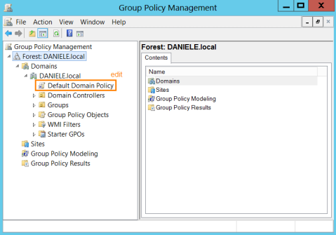
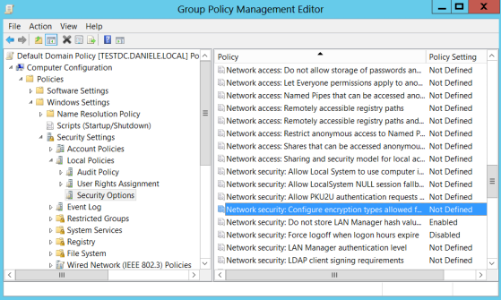
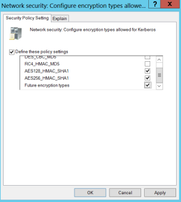

Disable RC4 encryption
From Windows Vista is possible disable RC4 encryption at group policy level.
If we want disable RC4 encryption only locally in “Local Security Policy”Control Panel → Administrative Tools → Local Security Policy → Security Options → "Network security: Configure encryption types allowed for Kerberos"
PS> reg add HKEY_LOCAL_MACHINE\SOFTWARE\Microsoft\Windows\CurrentVersion\Policies\System\Kerberos\Parameters /v SupportedEncryptionTypes /t REG_DWORD /d 0x7ffffff8 /f
PS> reg query HKEY_LOCAL_MACHINE\SOFTWARE\Microsoft\Windows\CurrentVersion\Policies\System\Kerberos\Parameters /v SupportedEncryptionTypes
Control Panel\System and Security\Administrative Tools → Default Domain Policy (right click edit)
Computer Configuration → Policies → Windows Settings → Security Settings → Local Policies → Security Options → "Network security: Configure encryption types allowed for Kerberos"
Define these Policy settings:
• AES_128_HMAC_SHA1
• AES256_HMAC_SHA1
• Future encryption types
Bibliography:
•
Configuring Group policy using powershell to disable RC4 Kerberos etype (microsoft.com)•
https://www.stigviewer.com/stig/windows_10/2017-12-01/finding/V-63795